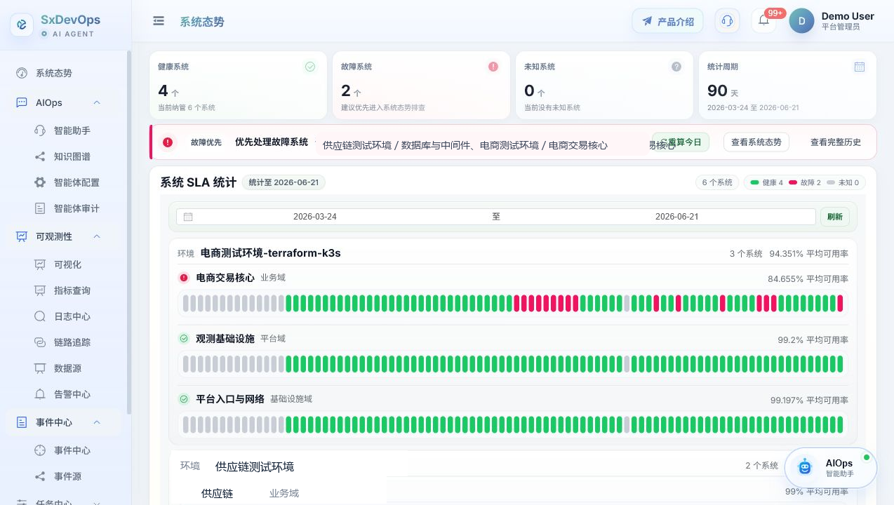
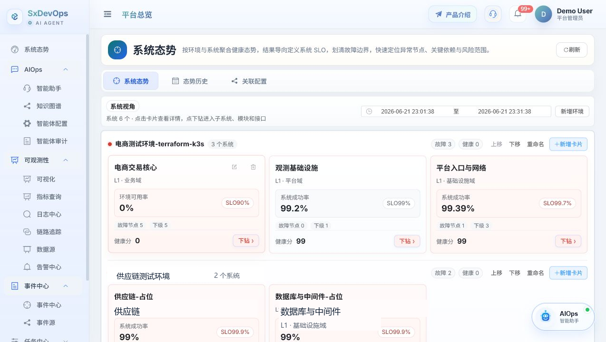

传统运维的核心问题：信息和动作被拆散了
告警散
告警中心看到红点，但缺少日志、Trace、最近变更和资产上下文。
事件散
发布、执行、失败、审批、关键写操作散落在不同页面，复盘成本高。
任务散
巡检、命令、Playbook 与主机权限脱节，动作入口不统一。
经验散
排障路径依赖个人记忆，结论难沉淀，下一次仍要重新查。
SxDevOps AI Agent 的定位不是再做一个聊天框，而是把平台已有能力包装成可控、可审计、可确认的智能工作流。
把告警、日志、链路、事件、任务和平台资产变成 Agent 可调用的事实工具，让运维从“到处查系统”升级为“看态势、找证据、问系统、确认动作”。
告警中心看到红点，但缺少日志、Trace、最近变更和资产上下文。
发布、执行、失败、审批、关键写操作散落在不同页面，复盘成本高。
巡检、命令、Playbook 与主机权限脱节，动作入口不统一。
排障路径依赖个人记忆，结论难沉淀，下一次仍要重新查。
四个能力不是并排功能，而是一条链路：可观测性取证，事件中心复盘，任务中心行动，AIOps 把它们组织成可解释的处理过程。

首页把系统态势历史直接放在主视图里，先从全局看哪些系统出现故障或可用率波动，再快速判断问题集中在哪个环境、哪个系统、哪个时间段。
按系统汇总最近 SLA 历史和当前状态，第一时间识别故障系统、未知系统和整体健康趋势。
从环境分组、系统条带和故障标记中快速确认影响范围，明确是单系统异常、同环境扩散，还是跨环境波动。
确定故障边界后，继续进入系统态势详情、可观测性证据和事件中心，补齐根因分析和后续动作。
Dashboard -> System Posture -> Observability -> Event Center日志、告警、Trace、Grafana 不再是四个孤立入口，而是 Agent 取证的统一事实层。
平台总览聚合日志、告警、Trace、Grafana 摘要、入口和最近活动。
日志中心 · 告警中心 · 链路追踪 · Grafana 大屏通过内置 MCP 工具查询告警、日志和链路证据，再交给 Skill 输出结构化结论。
query_observability · query_alerts · query_logs · query_traces

事件中心不是流水账，而是围绕最终执行结果、关键写操作和失败定位的复盘面板。
按系统、环境、应用过滤，快速看失败事件集中在哪个范围。
只保留最终执行结果和关键写操作，默认过滤未执行的驳回审批流。
支持回答“最近生产失败了什么”“谁触发了关键变更”“哪个应用失败最多”。
query_event_center动作型能力必须先生成任务草稿，再由用户确认，最终进入任务中心执行和审计。
可观测性、事件中心、任务中心、工单系统、容器管理和资源上下文统一暴露为工具 schema。
query_observability · query_event_center约束回答结构，让告警分析、工单汇总、任务生成有稳定输出模板。
结论 / 依据 / 建议操作工具白名单、参数清洗、RBAC、超时、异常兜底、动作确认和审计记录。
RBAC · Pending Action · Audit让最终回答稳定、可读、可追溯，不因为模型自由发挥丢失工具事实。
例如：分析生产 order-center 最近异常。
根据工具 schema 选择告警、日志、Trace、事件中心、任务工具。
后端按白名单执行工具，做权限、参数清洗、超时控制。
结构化工具结果形成证据集和代码兜底草稿。
按模板输出结论、依据、建议操作和可继续查看项。
后端接口、前端路由、菜单和 WebSocket 场景统一做权限收敛。
模型只能调用平台注册过的工具，真正执行由后端完成。
任务生成先进入待确认动作，用户确认后才写入任务中心。
会话、工具调用、待确认动作和关键事件都可追踪。
最终效果：少切系统，少拼证据，少靠口头经验，多用事实驱动，多用确认动作闭环。
告警处置、工单汇总、K8s 异常、任务生成等问题类型拥有独立 Skill 模板。
继续扩展平台内置 MCP，同时增强外部 MCP 健康检查、工具发现、鉴权与超时诊断。
在只读诊断后，接入审批、命令模板、Runbook 和任务编排，形成低风险自动化闭环。
SxDevOps AI Agent
让运维从“查系统”
升级为“看态势、找证据、问系统、确认动作”
一个面向真实运维现场的智能运维 Agent 项目。